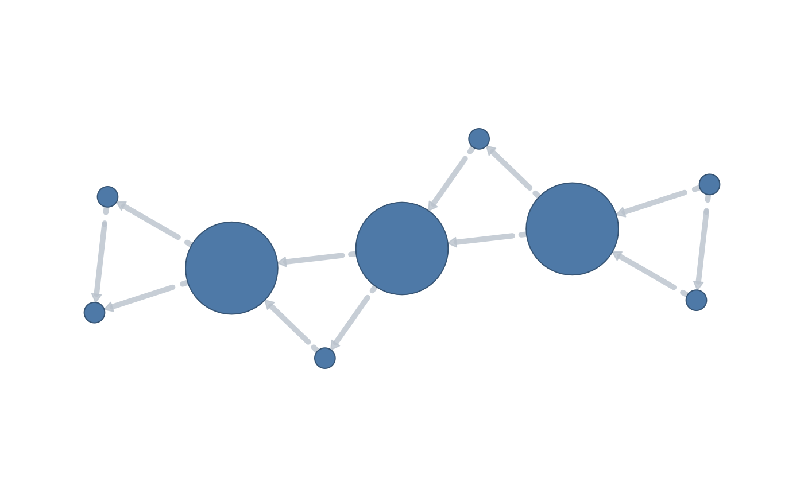
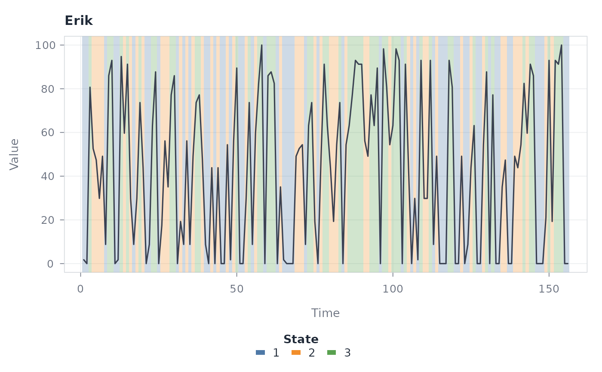

vg() is a discoverable verb for the package's flagship construction, the
visibility graph. It is a thin wrapper around tsn() with
method = "visibility": vg(x) is equivalent to tsn(x, "nvg") and
vg(x, "horizontal") is equivalent to tsn(x, "hvg"). Every input shape
and every visibility-relevant argument that tsn() accepts is forwarded
through ..., and the result is the same dual-class tsn/netobject/
cograph_network object.
Usage
vg(data, type = c("natural", "horizontal"), ...)Arguments
- data
A numeric vector,
ts, numeric matrix, named list of numeric vectors, or data frame (the same inputstsn()accepts).- type
Visibility rule:
"natural"(the natural visibility graph, the default) or"horizontal"(the horizontal visibility graph).- ...
Any other
tsn()argument relevant to visibility networks, for examplevalue,id,time,series,unit,state,discretization,n_states,m,tau,directed,limit,penetrable,decay,aggregation, andseed.
Value
A tidy tsn network object (also a netobject and a
cograph_network), equivalent to the corresponding tsn() call. The
stored provenance call records vg() rather than tsn().
See also
tsn() for the full argument set and the distance-network family.
Examples
vg(c(3, 1, 4, 2, 5, 3, 6, 2, 7))
#> <tsn> visibility time network: 9 nodes, 12 connected dyads
#> from to distance weight connected method unit
#> series_1:1 series_1:2 1 1 TRUE visibility time
#> series_1:1 series_1:3 2 1 TRUE visibility time
#> series_1:2 series_1:3 1 1 TRUE visibility time
#> series_1:3 series_1:4 1 1 TRUE visibility time
#> series_1:3 series_1:5 2 1 TRUE visibility time
#> series_1:4 series_1:5 1 1 TRUE visibility time
#> series_1:5 series_1:6 1 1 TRUE visibility time
#> series_1:5 series_1:7 2 1 TRUE visibility time
#> series_1:6 series_1:7 1 1 TRUE visibility time
#> series_1:7 series_1:8 1 1 TRUE visibility time
#> distance_method connection_method directed from_start from_end to_start to_end
#> <NA> natural FALSE 1 1 2 2
#> <NA> natural FALSE 1 1 3 3
#> <NA> natural FALSE 2 2 3 3
#> <NA> natural FALSE 3 3 4 4
#> <NA> natural FALSE 3 3 5 5
#> <NA> natural FALSE 4 4 5 5
#> <NA> natural FALSE 5 5 6 6
#> <NA> natural FALSE 5 5 7 7
#> <NA> natural FALSE 6 6 7 7
#> <NA> natural FALSE 7 7 8 8
#> Use plot(x) for the network or plot(x, "series") for the source series.
#> With cograph installed, splot(x) renders a publication-quality network.
vg(c(3, 1, 4, 2, 5, 3, 6, 2, 7), "horizontal")
#> <tsn> visibility time network: 9 nodes, 12 connected dyads
#> from to distance weight connected method unit
#> series_1:1 series_1:2 1 1 TRUE visibility time
#> series_1:1 series_1:3 2 1 TRUE visibility time
#> series_1:2 series_1:3 1 1 TRUE visibility time
#> series_1:3 series_1:4 1 1 TRUE visibility time
#> series_1:3 series_1:5 2 1 TRUE visibility time
#> series_1:4 series_1:5 1 1 TRUE visibility time
#> series_1:5 series_1:6 1 1 TRUE visibility time
#> series_1:5 series_1:7 2 1 TRUE visibility time
#> series_1:6 series_1:7 1 1 TRUE visibility time
#> series_1:7 series_1:8 1 1 TRUE visibility time
#> distance_method connection_method directed from_start from_end to_start to_end
#> <NA> horizontal FALSE 1 1 2 2
#> <NA> horizontal FALSE 1 1 3 3
#> <NA> horizontal FALSE 2 2 3 3
#> <NA> horizontal FALSE 3 3 4 4
#> <NA> horizontal FALSE 3 3 5 5
#> <NA> horizontal FALSE 4 4 5 5
#> <NA> horizontal FALSE 5 5 6 6
#> <NA> horizontal FALSE 5 5 7 7
#> <NA> horizontal FALSE 6 6 7 7
#> <NA> horizontal FALSE 7 7 8 8
#> Use plot(x) for the network or plot(x, "series") for the source series.
#> With cograph installed, splot(x) renders a publication-quality network.
network <- vg(c(3, 1, 4, 2, 5, 3, 6, 2, 7), "horizontal", directed = TRUE)
if (requireNamespace("cograph", quietly = TRUE)) {
plot(network)
}

data(steps)
states <- vg(
steps,
value = "steps",
id = "id",
time = "day",
series = 536,
unit = "state",
discretization = "quantile"
)
plot(states, "series", overlay = "vertical")
